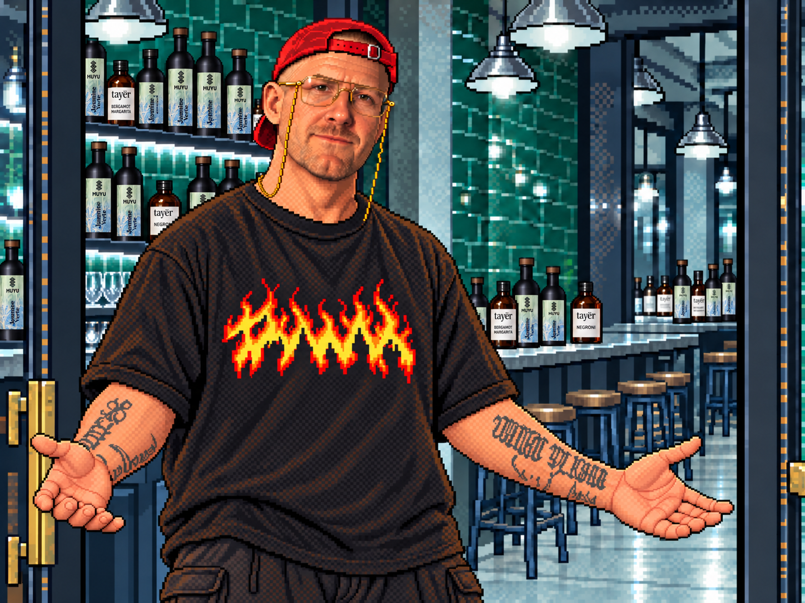

tayēr
+ elementary
Elementary
Tayēr
Old Street
Bar station
Turn view
＋
−
Reset view
Your evening ··
Sound on
Radio ↗
Shop ↗
×

OLD STREET · A THREE-DIMENSIONAL EVENING
Tayēr, Still Serving
The same bar. A little more depth.
Your name
I am 18 or older
Come inside ↗
Unofficial tribute · 3D prototype
×
elementary
#HUSTLEMAGIC
Virtual drinks · sample prices